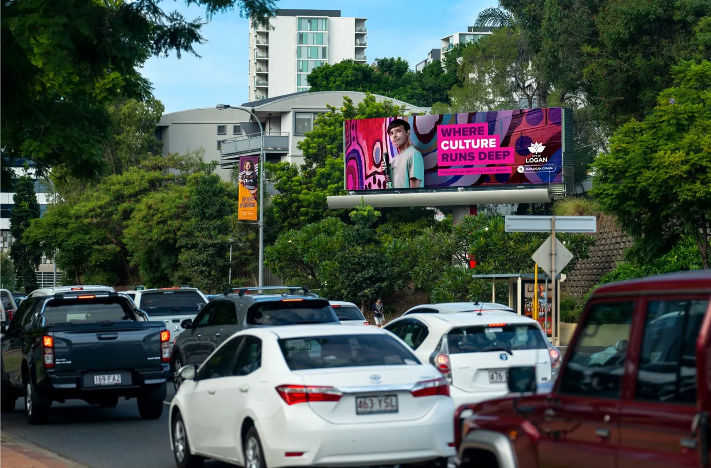
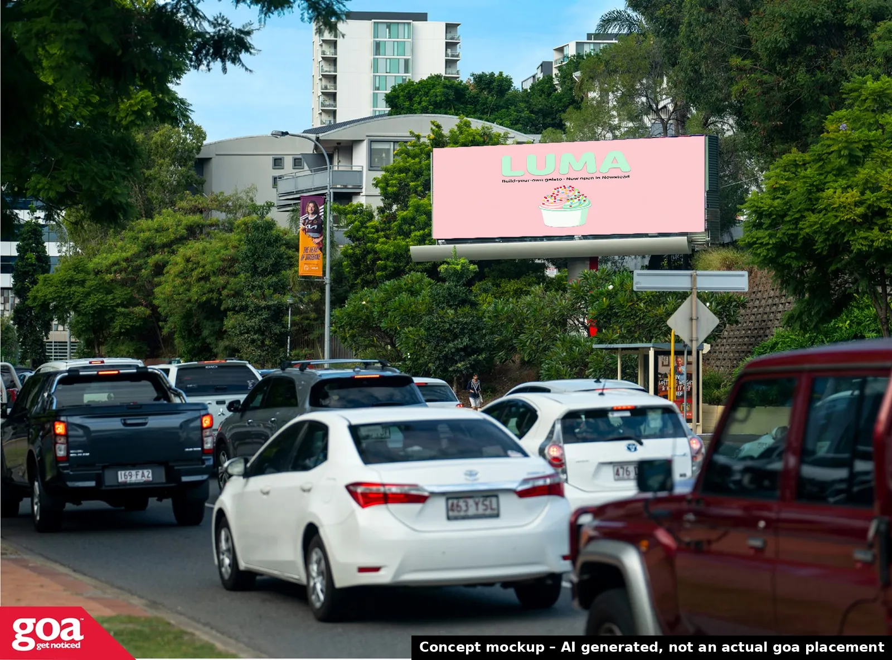
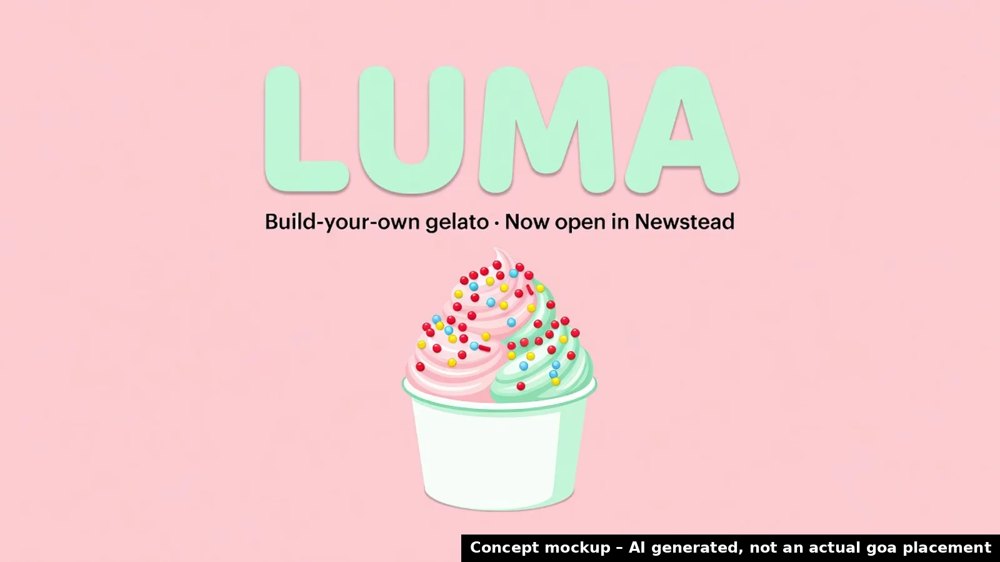

LUMA self-serve gelato
First Brisbane location at LIV Anura, 60 Skyring Terrace, Newstead; 4-week opening giveaway running.
🗓 Grand opening Thu 15 Oct 2026 · as reported by Brisbane Food Guide – LUMA Newstead ↗
Disabled in this demo: in production this books a call with your goa rep.


TodayYour conceptWhy billboards, why now
With LUMA self-serve gelato opening its first Brisbane location at LIV Anura on 15 October 2026 and running a 4-week opening giveaway, billboards at sites 0.2 km and 0.3 km away on Breakfast Creek Rd can place your message near the new dessert venue in Newstead. This timing allows outdoor advertising to reach drivers and pedestrians in the immediate area during the grand opening period.
- 📍 6 goa sites within 2 km of you; the nearest is 0.2 km away.
- 🗓 Timed to: Grand opening Thu 15 Oct 2026.
- 🖥 Digital sites can run several creatives per day and change by time of day.
Boards near you
Your pin is approximate. Board locations from goa's public site list. © OpenStreetMap contributors.
Concept creative

Concept mockups, AI generated, not actual goa placements. No real logos used; final artwork would come from you.
Build your campaign
Pick boards and timing to shape a brief. Prices aren't shown here: indicative pricing confirmed by goa.
Indicative pricing confirmed by goa. Availability subject to booking.
Suggested timeline
- 15 Oct 2026The moment: Grand opening Thu 15 Oct 2026
- 28 OctSuggested campaign start
- 25 NovCheck-in: refresh creative or timing (digital sites)
- 12 DecQLD summer school holidays begin (to 26 Jan 2027): optional seasonal burst
Next step
A 15-minute call to confirm availability and indicative pricing for the boards you picked.
Book a call with goaDisabled in this demo: in production this books a call with your goa rep.